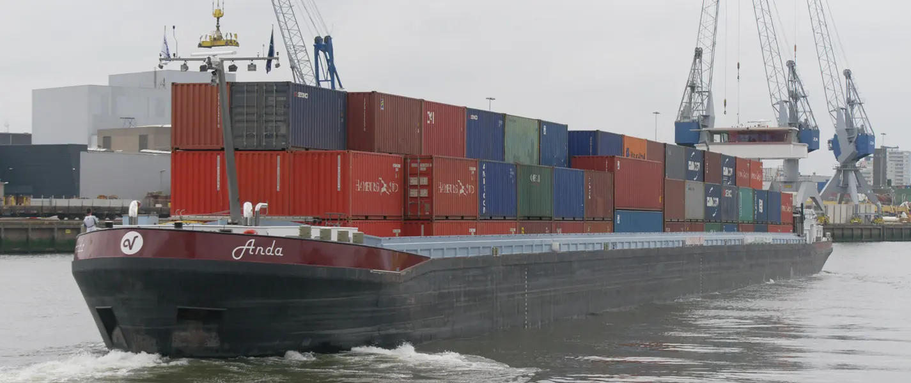
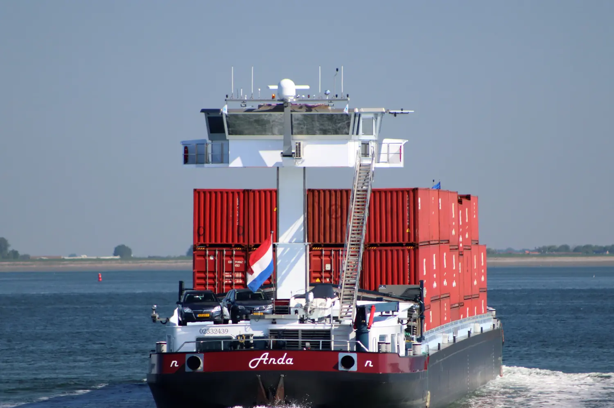

Bij 2,80 m diepgang laadt de Anda 2.700 ton.
De MS Anda vervoert containers, droge bulk en stukgoed door Nederland, België, Duitsland en Oostenrijk. Een familiebedrijf in de vierde generatie.
DemoOp de live site staat hier de toegestane diepgang van vandaag, berekend uit de actuele waterstand.
135 meter lang, 11,45 meter breed. Plaats voor 3.878 ton of 266 containers, met 5.000 m³ ruim onder de luiken en 8 aansluitingen voor koelcontainers.
Gecertificeerd voor Green Award, GMP+, Niwo en Lean & Green, en voor het vervoer van gevaarlijke stoffen onder ADNR.
Past uw lading?
Vul in wat u wilt vervoeren. U ziet meteen hoe diep de Anda dan ligt en of dat past bij de waterstand.
- Diepgang met deze lading
- 2,59 m
- Toegestane diepgang
- 2,80 m
- Er kan nog bij
- ca. 300 ton
- Past het?
- Ja, dit past
- Lagen in het ruim
- 3 van de 4
- Nog vrij
- 106 TEU
- Vrachtwagens die niet hoeven te rijden
- ca. 81
- Koelcontainers
- tot 8 aansluitingen
Een indicatie op basis van de laadtabel van de Anda. De definitieve berekening maken we samen met u.
| Diepgang (m) | 1,63 | 1,98 | 2,32 | 2,66 | 3,00 | 3,34 | 3,59 |
|---|---|---|---|---|---|---|---|
| Ton | 1.000 | 1.500 | 2.000 | 2.500 | 3.000 | 3.500 | 3.878 |
Eén schip voor alle droge lading
De MS Anda is in 2009 opgeleverd als multipurpose-schip. Een ruim van 105 meter, met of zonder luiken, en containers tot vier lagen hoog.
- Containers
- Droge bulk
- Stukgoed
- Gevaarlijke stoffen (ADNR)
- Afvalstoffen
- Koppelverband tot 9.400 ton

Scheepsfiche
ENI 02332439Afmetingen
- Lengte
- 135,00 m
- Breedte
- 11,45 m
- Maximale diepgang
- 3,59 m
- Diepgang leeg
- gemiddeld 0,91 m
Laadruim
- Lengte, breedte, hoogte
- 105 × 10,10 × 4,50 m
- Inhoud onder de luiken
- ca. 5.000 m³
- Containers zonder luiken
- 266 TEU in 4 lagen
- Containers met luiken
- 252 TEU in 4 lagen
- Aansluitingen koelcontainers
- 8 (3 achter, 5 voor)
Techniek
- Hoofdmotoren
- 2× Cummins, 1.200 pk
- Boegschroeven
- 2× Cummins, 560 pk
- Generatoren
- 2× 64 kVA, geluidsdicht
- Klaproeren
- 2
- Spudpaal voor
- 10,60 m
Schoon varen deden we al voordat het moest
De Anda kreeg als eerste multipurpose-schip voor containers, droge bulk en stukgoed een groen label. Een roetfilter en een SCR-katalysator reinigen de uitlaatgassen.
- ca. 90%minder stikstofoxiden door de SCR-katalysator
- Roetfilterhaalt fijnstof uit de uitlaatgassen
- CCR IIgecertificeerde hoofdmotoren
- Stilvoldoet aan de strengste geluidsnormen van de Scheepvaartinspectie
134
vrachtwagens hoeven niet de weg op als de Anda vol containers vaart.
Eén schip tegenover 134 vrachtwagens. Dat rekende de familie uit toen de Anda in de vaart kwam.
Van 's-Gravendeel tot Oostenrijk
De Anda vaart op de binnenwateren van Nederland, België, Duitsland en Oostenrijk.

De naam komt van Jan en Ada, de ouders van Jacob.
Vier generaties aan het roer
Jacob en Paula Verdonk leiden het bedrijf nu, samen met twee ervaren kapiteins. Ze werken op dezelfde manier als de generaties voor hen.
M. de Looff laat de Jamajo te water, een sleepschip van 500 ton.
Zijn dochter en schoonzoon nemen het over en bouwen de Jamajo om tot motorschip.
De derde generatie neemt het roer over.
De Jamajo gaat naar de sloop. Een schip van 600 ton krijgt de naam Anda en vaart zand en grind binnen Nederland.
De vierde generatie stapt in. Een Anda van 2.800 ton vaart op de Rijn, Main, Moezel en Maas.
De overstap naar containers, met een schip van 110 bij 11,40 meter.
De huidige MS Anda komt in de vaart: 135 meter, gebouwd voor alle droge lading.
Jacob en Paula Verdonk nemen het bedrijf over.
Lading aanbieden
Van waar naar waar, wanneer en hoeveel. Meer hoeven we niet te weten om met u mee te denken.